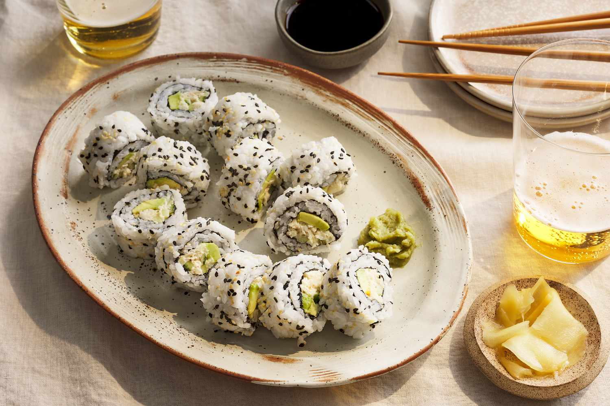

How to make California Sushi
Home

Description
The California roll; my favorite! I’m not a brave sushi goer (no raw fish for me!), but I sure do love my California rolls. I crave these topped
with spicy mayo and dipped in a wasabi/soy sauce concoction. It’s also pretty inexpensive to make sushi at home. With the right tools and this
tutorial, you’ll be a pro in no time.
I learned my sushi making skills after reading Mom’s culinary textbook from her college days, a little bit of trial-and-error and picked up some
tips (like the wet knife and the plastic wrapped-sushi matt) from Ree Drummond.
Ingredients
Sushi Rice
- 2 cups Japanese short or medium grain rice (such as Homai or California Calrose)
- 2 to 2 1/2 cups cold water
- 5 Tbsp Sushi Vinegar
- 4 Tbsp Rice vinegar
- 2 Tbsp sugar
- 2 tsp salt (sea salt preferred)
Filling and Wrap
- 1/2 lb Imitation crab meat (p.s. the “log” shaped crab meat is the easiest to work with)
- 1 Avocado, ripe but still firm.
- 1/2 medium cucumber, peeled and sliced into long julienne strips.
- Toasted Nori Seaweed.
- Toasted sesame seeds.
- A sushi rolling mat + Plastic wrap to cover the mat. If you don’t have a sushi mat, try using parchment paper instead.
Steps
Making the Sushi Rice
- Wash the rice with cold water until the water runs clear. Drain well. If you have a rice maker (way easier!), follow rice maker instructions
(add 2 cups rice and 2 1/2 cups water) (no salt required!) and cook on the white rice setting then skip to step 4.
- For the stove top method: Put drained rice in a heavy sauce-pan and add 2 cups cold water. Cover tightly and set the pan over high heat and
bring to a boil. Once it boils, reduce heat to medium and let cook covered until all the water is absorbed (7-8 min). Do not remove the cover
to check, but listen for the bubbling to stop.
- Once you hear a faint hissing sound, reduce the heat to very low and cook another 6 min. Remove from the heat and let stand 15 min covered.
This is the basic white rice eaten with Japanese meals.
- Transfer the hot rice to a large bowl and break it up to get rid of all the hot clumps.
- Let the rice cool down a little. It should still be very warm when you stir in your sushi vinegar.
Assemble your California Roll
- Wrap your in plastic wrap before using it (this makes it re-useable and you don’t even have to wash it!).
- Fold the pieces of nori in half to split them.
- Toast your sesame seeds over medium heat, stirring constantly until golden. Slice up your veggies and crab meat.
- Spread a generous handful of sushi rice onto the 1/2 sheet of nori. Use your WET FINGER TIPS (keep your hands wet to prevent sticking)
to spread the rice evenly over the entire surface of the nori.
- Flip the rice covered piece of nori over so the rice is facing down (this way, your rice will be on the outside). Place your fillings
across the center of your nori lengthwise (don’t overfill or the roll won’t seal).
- Start rolling using your matt to firmly keep the roll in place. Apply some pressure to make a tight roll. If its not tight enough, it
will be difficult to cut. Once the roll is complete, sprinkle the roll with toasted sesame seeds while it is still on the mat so you can turn
it easily.
- Run your sharp knife through a damp paper towel before slicing so the rice won’t stick as much. Cut the roll in half, then line the two
halves up and slice into even 1-inch rings. I have found that it slices easier when you slice quickly.